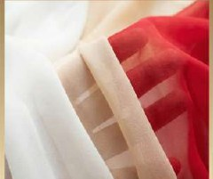
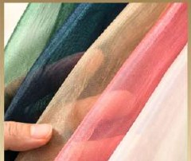
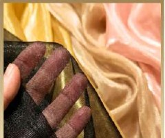

Silk chiffon
Matte, fluid and refined.
Best for wedding gifts, bridal packaging, luxury keepsakes and delicate product presentation.
- Natural silk
- Matte finish
- Gentle transparency
- Fluid drape
Choose the fabric that matches the mood, structure and budget of your packaging.

Matte, fluid and refined.
Best for wedding gifts, bridal packaging, luxury keepsakes and delicate product presentation.

Glossy, crisp and sculptural.
Best for brand packaging, corporate gifts, product launches and polished premium presentation.

Clean, lightweight and practical.
Best for event favors, promotional gifts, party packaging and larger custom quantities.